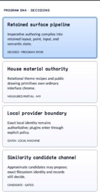

class · visual
Card
Card is a retained header/body/footer composition with explicit section ownership, theme-derived or caller-owned layout, optional interaction, selection state, painter-neutral material rendering, and semantic projection.
Visual evidence

Ownership and hierarchy
- Hierarchy
- Panel → Card
- Declaration
- include/gui_forms/controls/panel/card/card.hpp:32
- Definition
- src/controls/panel/card/card.cpp
Public methods
Card
explicit Card(StableId stable_id)Constructs an empty Card and selects the theme's card visual role; sections remain absent until installed.
header
[[nodiscard]] Control::Ptr header() const noexceptReturns the currently retained header child, or null when that role is empty.
body
[[nodiscard]] Control::Ptr body() const noexceptReturns the currently retained body child, or null when that role is empty.
footer
[[nodiscard]] Control::Ptr footer() const noexceptReturns the currently retained footer child, or null when that role is empty.
set_header
[[nodiscard]] Control::Ptr set_header(Control::Ptr control)Installs an unparented control in the header role and returns the detached predecessor; cross-role reuse and already-parented controls are rejected atomically.
set_body
[[nodiscard]] Control::Ptr set_body(Control::Ptr control)Installs an unparented control in the body role and returns the detached predecessor; ownership and typed invalidation match the other section setters.
set_footer
[[nodiscard]] Control::Ptr set_footer(Control::Ptr control)Installs an unparented control in the footer role and returns the detached predecessor; ownership and typed invalidation match the other section setters.
card_layout
[[nodiscard]] const CardLayout& card_layout() const noexceptReturns the stored explicit CardLayout value; use effective_card_layout to observe the active theme-derived value.
uses_theme_layout
[[nodiscard]] bool uses_theme_layout() const noexceptReports whether structural spacing and extents currently come from the inherited Theme.
effective_card_layout
[[nodiscard]] CardLayout effective_card_layout() const noexceptResolves either structural Theme tokens or the explicit CardLayout into the active layout contract.
set_card_layout
void set_card_layout(CardLayout layout)Validates bounded finite padding, gaps, and extents, then makes the supplied layout authoritative and invalidates measure through semantics.
reset_card_layout_to_theme
void reset_card_layout_to_theme()Restores inherited structural Theme tokens as the layout authority.
interactive
[[nodiscard]] bool interactive() const noexceptReports whether the Card participates in hit testing, focus, activation, and selectable item semantics.
set_interactive
void set_interactive(bool interactive)Enables or disables interaction, synchronizes focusability, and clears hover/press/focus state when interaction is removed.
selected
[[nodiscard]] bool selected() const noexceptReturns the retained selection state.
set_selected
void set_selected(bool selected)Commits selection synchronously, invalidates visual and semantic state, then publishes selected_changed once for a real change.
selection_behavior
[[nodiscard]] CardSelectionBehavior selection_behavior() const noexceptReturns whether activation leaves selection manual, selects, or toggles selection.
set_selection_behavior
void set_selection_behavior(CardSelectionBehavior behavior)Selects an explicit activation/selection policy; invalid enum values are rejected without mutation.
hovered_visual
[[nodiscard]] bool hovered_visual() const noexceptReports the retained hover cue state used by Theme recipe resolution.
pressed_visual
[[nodiscard]] bool pressed_visual() const noexceptReports the retained pointer/keyboard press cue state.
focused_visual
[[nodiscard]] bool focused_visual() const noexceptReports the retained focus cue state.
activated
[[nodiscard]] Event<Card&>& activated() noexceptReturns the activation event. When selection behavior is enabled, selection commits before this event is published.
selected_changed
[[nodiscard]] Event<bool>& selected_changed() noexceptReturns the selection-change event published after retained selection commits.
measure
[[nodiscard]] Size measure(Size available) overrideMeasures current header, body, and footer snapshots defensively, respects mutation during callbacks, and adds only gaps between present sections.
arrange
void arrange(Rect final_bounds) overrideAllocates header from the top, footer from the bottom, and body through the remaining padded extent.
on_paint
void on_paint(Painter& painter, Rect local_damage) overrideResolves the current card Theme recipe and records its material/focus ring, unless inherited Panel style/background overrides are authoritative.
visual_outsets
[[nodiscard]] Insets visual_outsets() const noexcept overrideReports compositor outsets from the active material shadows or delegates to Panel when a Panel override is active.
hit_test_local
[[nodiscard]] bool hit_test_local(Point local_point) const overrideAdmits local hit testing only while the Card is explicitly interactive.
on_pointer
void on_pointer(PointerEvent& event) overrideTracks normalized enter/leave and primary-button press/release state; qualified click activation remains the shared Control activation path.
on_key
void on_key(KeyEvent& event) overrideTracks Space/Enter as a retained press and invokes the same activation path on the matching key release.
on_focus_changed
void on_focus_changed(bool focused) overrideCommits the focus cue and cancels incomplete keyboard presses when focus leaves.
on_activate
void on_activate() overrideApplies the configured selection behavior, then publishes activated if the selection callback did not dispose the Card.
semantic_descriptor
[[nodiscard]] SemanticDescriptor semantic_descriptor() const overrideProjects an interactive Card as a selectable list item and carries selected, busy, or invalid state into the semantic graph.
on_semantic_action
bool on_semantic_action(SemanticAction action, std::string_view value) overrideRoutes semantic press through activation, semantic select through retained selection, and delegates unrelated actions to Panel.